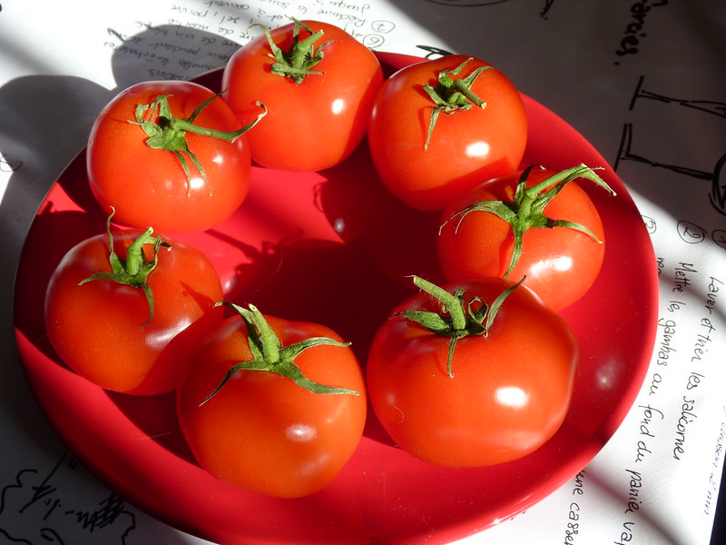
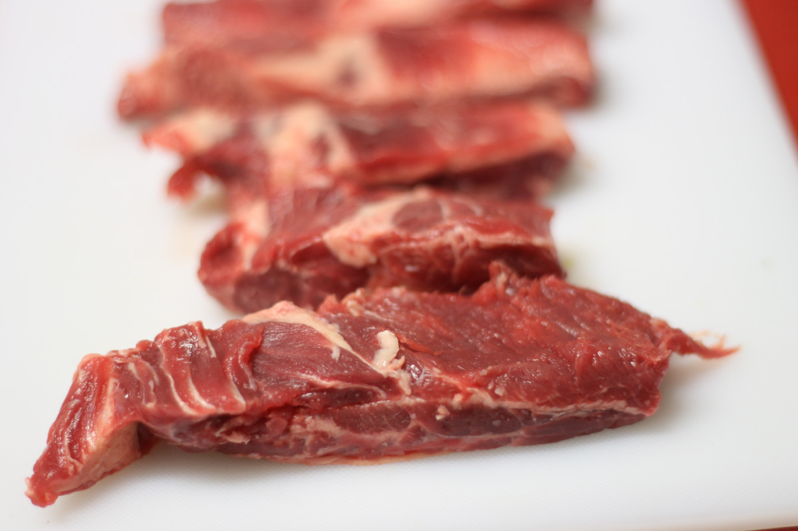
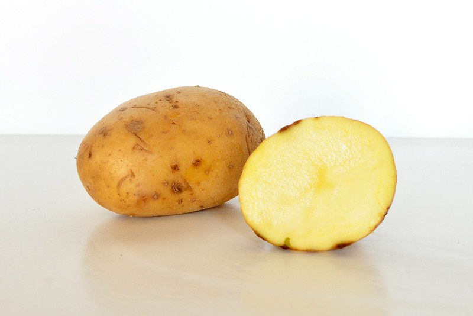
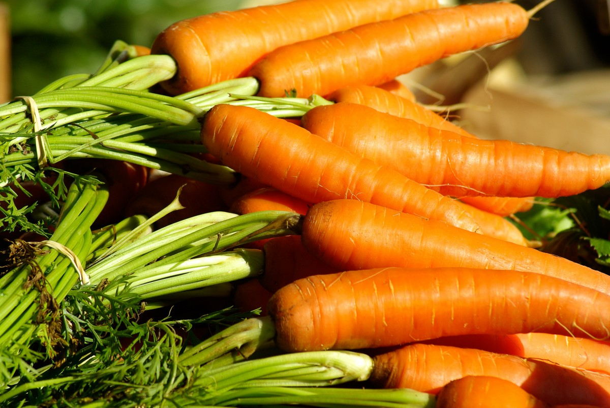

Temps de préparations: 30 min
Historique
Le tajine marocain est bien plus qu’un simple plat, c’est une véritable icône culturelle, ancrée dans l’histoire du Maroc depuis des siècles. Son nom désigne à la fois la préparation culinaire et le récipient en terre cuite ou en céramique dans lequel il est traditionnellement cuisiné. Ce dernier est conçu pour permettre une cuisson lente et uniforme, concentrant les saveurs et les arômes des ingrédients. Le tajine était autrefois préparé par les familles berbères dans les montagnes de l’Atlas, où il pouvait mijoter des heures sur des braises tout en conservant les nutriments des aliments. Les tajines varient selon les régions et les saisons : ceux du nord privilégient souvent les saveurs sucrées-salées avec des pruneaux, des amandes et du miel, tandis que les tajines des plaines intègrent des légumes frais et des épices comme le curcuma et le gingembre. Aujourd’hui, le tajine est devenu un symbole de convivialité et de partage, apprécié tant par les Marocains que par les amateurs de gastronomie à travers le monde.
Ingrédients pour deux (02) personnes
 |
 |
| Tomate | Huile d'olive |
 |
 |
| Viande | Sel fin |
 |
 |
| Pomme de terre | Carotte |
Préparations
- Préparez les légumes
Commencez par éplucher les pommes de terre et les carottes, puis découpez-les en morceaux uniformes. Cela garantit une cuisson homogène. Émincez l’oignon et hachez l’ail. Pelez les tomates, retirez les graines si vous le souhaitez, puis coupez-les en dés. - Faites chauffer le tajine
Si vous utilisez un tajine traditionnel, placez-le sur un feu très doux ou utilisez un diffuseur de chaleur pour éviter qu’il ne se fissure. Versez l’huile d’olive dans le fond et faites revenir les oignons doucement jusqu’à ce qu’ils soient translucides et légèrement dorés. - Ajoutez les épices et la viande
Intégrez l’ail, le gingembre, le curcuma, la cannelle (si utilisée), le sel et le poivre. Mélangez bien pour que les arômes se développent. Ajoutez ensuite la viande et faites-la dorer légèrement sur chaque face. Cette étape permet à la viande de s’imprégner des épices et de commencer à libérer ses jus. - Disposez les légumes
Disposez les morceaux de légumes tout autour et au-dessus de la viande. Alternez les couleurs pour une présentation visuelle agréable. Ajoutez les tomates en dés par-dessus. Versez doucement l’eau ou le bouillon sur le tout, sans noyer les ingrédients : le liquide doit à peine arriver à mi-hauteur. - Couvrez et laissez mijoter
Fermez hermétiquement le couvercle du tajine et laissez cuire à feu doux pendant environ 1h30. Le secret du tajine réside dans cette cuisson lente qui permet aux saveurs de se marier harmonieusement. Vérifiez de temps en temps que le liquide ne s’est pas entièrement évaporé, en ajoutant un peu d’eau si nécessaire. - Ajoutez les garnitures (optionnel)
Une dizaine de minutes avant la fin de la cuisson, incorporez les olives et disposez quelques quartiers de citron confit sur les légumes. Ces éléments apportent une touche acidulée et salée qui sublime le plat. - Finalisez et servez
Une fois la cuisson terminée, vérifiez l’assaisonnement et rectifiez-le si nécessaire. Servez le tajine directement dans le plat en terre cuite, accompagné de pain marocain pour absorber la sauce ou d’une semoule de couscous légère.
Bon appétit !
Le tajine se déguste chaud, souvent partagé autour d’une table familiale ou entre amis. Vous pouvez également personnaliser votre recette en ajoutant des fruits secs comme des abricots ou des pruneaux pour une version sucrée-salée, ou en variant les légumes selon les saisons.
Retrouver ici d'autres recettes de Tajine.| Notez cette recette et laissez un commentaire pour nous faire part de vos avis! |